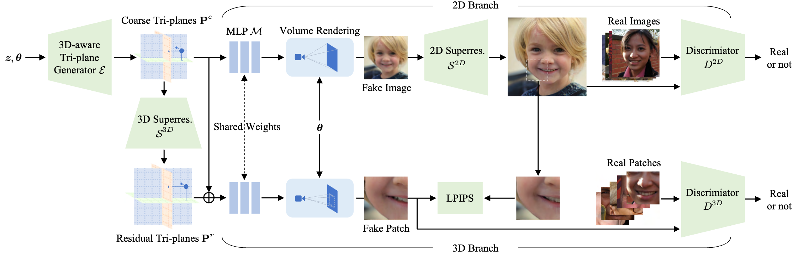
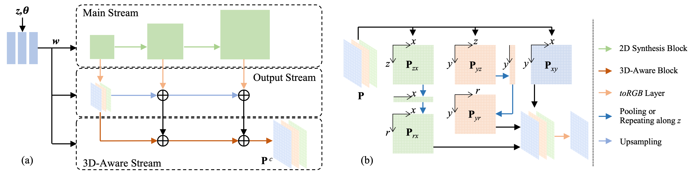

Mimic3D: Thriving 3D-Aware GANs via 3D-to-2D Imitation
ICCV 2023
- Xingyu Chen *
- Deng Yu *
- Baoyuan Wang
- Xiaobing.AI
- * These authors contributed equally to this work


Our method enables high-quality image generation at 512 × 512 resolution without using a 2D super-resolution module.
Abstract
Generating images with both photorealism and multiview 3D consistency is crucial for 3D-aware GANs, yet existing methods struggle to achieve them simultaneously. Improving the photorealism via CNN-based 2D super-resolution can break the strict 3D consistency, while keeping the 3D consistency by learning high-resolution 3D representations for direct rendering often compromises image quality. In this paper, we propose a novel learning strategy, namely 3D-to-2D imitation, which enables a 3D-aware GAN to generate high-quality images while maintaining their strict 3D consistency, by letting the images synthesized by the generator's 3D rendering branch to mimic those generated by its 2D super-resolution branch. We also introduce 3D-aware convolutions into the generator for better 3D representation learning, which further improves the image generation quality. With the above strategies, our method reaches FID scores of 5.4 and 4.3 on FFHQ and AFHQ-v2 Cats, respectively, at 512$\times$512 resolution, largely outperforming existing 3D-aware GANs using direct 3D rendering and coming very close to the previous state-of-the-art method that leverages 2D super-resolution.
Overview

Overview of our framework. 3D-to-2D imitation strategy is enforced to let the generator's 3D branch to mimic the results of its 2D branch, thus leading to image generation of high quality and strict 3D consistency. 3D-aware convolutions are also introduced to the tri-plane generator to enhance 3D representation learning, which further improves the image generation quality.
3D-aware tri-plane generator

(a) Structure of our 3D-aware tri-plane generator. (b) Operations of the 3D-aware block on xy plane.
Comparisons with Prior Arts

When compared to EG3D on FFHQ at 512 resolution, our method generates images with comparable quality to those of EG3D, while producing 3D geometries with finer details and multiview sequences with better 3D-consistency. When compared to other 3D rendering baselines on FFHQ at 512 resolution, our method generates images with higher quality.
Dynamic Demonstrations
Comparison with EG3D on 512-Resolution Face Generation. We have on-par image quality and superior multi-view consistency.
Comparison with EpiGRAF and GMPI on 512-Resolution Face Generation. We have superior image quality.
More our results on FFHQ.
More our results on AFHQ-v2 Cats.
Responsible AI Considerations
The goal of this paper is to study generative modelling of the 3D objects from 2D images, and to provide a method for generating multi-view images of non-existing, virtual objects. It is not intended to manipulate existing images nor to create content that is used to mislead or deceive. This method does not have understanding and control of the generated content. Thus, adding targeted facial expressions or mouth movements is out of the scope of this work. However, the method, like all other related AI image generation techniques, could still potentially be misused for impersonating humans. Currently, the images generated by this method contain visual artifacts, unnatural texture patterns, and other unpredictable failures that can be spotted by humans and fake image detection algorithms. We also plan to investigate applying this technology for advancing 3D- and video-based forgery detection.
Citation
@inproceedings{bib:mimic3d,
title={Mimic3D: Thriving 3D-Aware GANs via 3D-to-2D Imitation},
author={Chen, Xingyu and Deng, Yu and Wang, Baoyuan},
booktitle={Proceedings of the IEEE/CVF International Conference on Computer Vision (ICCV)},
year={2023}
}